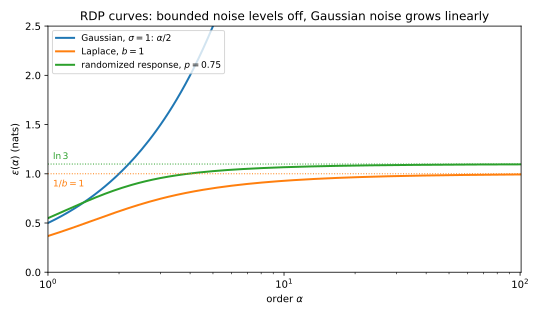

27 Rényi differential privacy
27.1 Why this matters
You train a model with 1000 steps of full-batch noisy gradient descent. Each step computes a quantity whose sensitivity is 1, meaning one person’s record moves it by at most 1, and adds Gaussian noise whose standard deviation is \(\sigma = 20\) times that sensitivity; \(\sigma\) is the noise multiplier. What is the total differential privacy (DP) guarantee at \(\delta = 10^{-5}\)?
Advanced composition turns each step into one \((\varepsilon_0, \delta_0)\) pair and composes the pairs; with the best split of \(\delta\) it gives \(\varepsilon = 68.01\). The true answer is \(\varepsilon = 7.51\), nine times smaller, and the damage is done in the first move. A Gaussian step has no single \((\varepsilon_0, \delta_0)\): for every \(\varepsilon_0\) there is a smallest \(\delta_0\) that works, so it has a whole curve of valid pairs. Picking one point throws away the rest of the curve, which composition needs.
So keep a curve that is easy to compose. Rényi differential privacy (RDP) records, for each order \(\alpha > 1\), an exponential moment of the privacy loss. These curves add up over a run, with no \(\delta\) spent along the way, and you convert the total to \((\varepsilon, \delta)\) once, at the end. For the 1000 Gaussian steps this gives \(\varepsilon = 8.84\), 18% above the exact 7.51.
27.2 The RDP curve
Run a mechanism \(M\) on neighbouring datasets \(D\) and \(D'\) to get output distributions \(P = M(D)\) and \(Q = M(D')\). The privacy loss of an output \(y\) is \(L(y) = \ln\frac{p(y)}{q(y)}\), the log of how much more likely \(y\) is under \(D\) than under \(D'\). Over several steps the losses add, because the likelihood ratios multiply.
Which summary of a loss survives being summed? Not a tail probability, which is what \((\varepsilon, \delta)\) records. Exponential moments do: for independent losses, the average of \(e^{\lambda(L_1 + L_2)}\) is the product of the averages of \(e^{\lambda L_1}\) and \(e^{\lambda L_2}\), so their logarithms add. The Rényi divergence of order \(\alpha\) is the log of one such moment, scaled: \[D_\alpha(P\|Q) = \frac{1}{\alpha - 1}\ln\mathbb E_P\big[e^{(\alpha - 1)L}\big] = \frac{1}{\alpha - 1}\ln\int p^\alpha q^{1-\alpha}\,dy. \tag{27.1}\] A mechanism is \((\alpha, \varepsilon)\)-RDP if \(D_\alpha(M(D)\|M(D')) \le \varepsilon\) for every pair of neighbours, and its RDP curve \(\varepsilon(\alpha)\) is the smallest such \(\varepsilon\) at each order, the divergence of the worst pair.
The order sets how much large losses count, since an exponential moment is dominated by them, the more so the larger \(\alpha\). As \(\alpha \to 1\) the curve tends to the average loss, the Kullback–Leibler (KL) divergence; as \(\alpha \to \infty\) it tends to the largest loss of any output, so a mechanism is \(\varepsilon\)-DP exactly when \(\varepsilon(\infty) \le \varepsilon\). In between it never decreases. A loss that is usually small but sometimes huge is caught only at large orders.
Randomized response shows both ends. It reports one person’s bit truthfully with probability \(p = 0.75\) and flips it otherwise, so the loss is \(\ln 3\) on an output that agrees with the bit and \(-\ln 3\) on one that doesn’t. The average loss is \((0.75 - 0.25)\ln 3 = 0.5493\), the curve’s value as \(\alpha \to 1\); it rises through 0.8473 at order 2 and 1.0666 at order 10 to the largest loss, \(\ln 3 = 1.0986\). A single point such as “\((2, 0.8473)\)-RDP” says nothing about higher orders, where the curve may keep rising, so accountants store the whole curve on a grid of orders.
27.3 RDP curves of the basic mechanisms
A mechanism that adds noise to a query’s answer produces the same noise centred at two different answers. Its curve is the divergence between the noise and a shifted copy, and since a larger shift makes the copies easier to tell apart, the worst pair is the one with the largest shift, the sensitivity.
For the Gaussian mechanism the log of the ratio of two normal densities is a difference of two squares whose quadratic terms cancel, so the loss is linear in the output and therefore itself normal. The log of a normal variable’s exponential moment is quadratic in \(\lambda\), and dividing by \(\alpha - 1\) leaves a straight line. With sensitivity 1, \[\varepsilon(\alpha) = \frac{\alpha}{2\sigma^2}. \tag{27.2}\] For a vector query only the Euclidean distance between the two answers matters, because the noise looks the same in every direction, so \(\sigma\) is the noise standard deviation in units of the \(\ell_2\) sensitivity. In the differentially private version of stochastic gradient descent (SGD), DP-SGD, which clips each example’s gradient and adds Gaussian noise, that sensitivity is the clipping norm, so the \(\sigma\) you plug in is the noise standard deviation divided by the clipping norm.
A linear loss has no maximum, so the curve grows without limit: the Gaussian mechanism is not \(\varepsilon\)-DP for any \(\varepsilon\). It is RDP at every finite order, though, and that is all composition and conversion need. The Laplace mechanism, which adds noise of density \(\frac{1}{2b}e^{-|y|/b}\), behaves differently. Its loss at \(y\) is \((|y - 1| - |y|)/b\), which the triangle inequality keeps between \(-1/b\) and \(1/b\), so its curve levels off at its pure-DP level \(1/b\); randomized response levels off at \(\ln\frac{p}{1-p}\) for the same reason. All three curves are exact (Mironov 2017); the closed forms are in Table 27.3, and Figure 27.1 and Table 27.1 compare them.

| Mechanism | \(\varepsilon(1.5)\) | \(\varepsilon(2)\) | \(\varepsilon(10)\) | \(\varepsilon(64)\) | \(\varepsilon(\infty)\) |
|---|---|---|---|---|---|
| Gaussian, \(\sigma = 1\) | 0.7500 | 1.0000 | 5.0000 | 32.0000 | \(\infty\) |
| Laplace, \(b = 1\) | 0.5129 | 0.6191 | 0.9287 | 0.9891 | 1 |
| Randomized response, \(p = 0.75\) | 0.7340 | 0.8473 | 1.0666 | 1.0940 | 1.0986 |
These are curves of a step that uses the whole dataset. A step on a random subset has a smaller curve, derived in Amplification by subsampling.
27.4 Composition adds curves
Training steps are not independent, since each gradient depends on the model so far, so the product argument of Section 27.2 needs one more idea. Fix the first output and look at the second step alone. Whatever the first output was, the second step is some mechanism with curve at most \(\varepsilon_2\), so its moment is at most \(e^{(\alpha - 1)\varepsilon_2(\alpha)}\); averaging over the first output leaves the first step’s moment times that constant. Taking the log, the curves add: \[\varepsilon_M(\alpha) \le \sum_{i=1}^k \varepsilon_i(\alpha) \qquad\text{for every } \alpha > 1, \tag{27.3}\] with equality for independent steps (Mironov 2017). The argument also shows the limit of adaptivity: each step’s bound must hold whatever the earlier outputs were, so it has to be fixed in advance. A noise level or step count chosen on the fly from the data needs the filters of Adaptive composition.
The smallest \(\delta\) for a given \(\varepsilon\) has no such product structure. It is the probability by which one output distribution exceeds \(e^\varepsilon\) times the other, a positive part of a difference, which does not factor over steps. So never convert each step first and compose afterwards: that is where the factor of nine in the opening example comes from.
For Gaussian steps the sum has a picture. Each of \(k\) steps shifts its output by at most 1, and the \(k\) shifts together form a vector of length \(\sqrt k\); a shift of \(\sqrt k\) under noise \(\sigma\) is the same as a shift of 1 under noise \(\sigma/\sqrt k\). So \(k\) steps with noise multiplier \(\sigma\) have the curve \(k\alpha/(2\sigma^2)\), the curve of one Gaussian step with noise multiplier \(\sigma/\sqrt k\). With \(\sigma = 20\) and 1000 steps that is one Gaussian with \(\sigma = 0.6325\).
The same picture shows why DP-SGD needs more than noise. If every step of the part’s running example, 10,000 steps with \(\sigma = 1\), used the whole dataset, the run would be one Gaussian with noise multiplier \(1/\sqrt{10{,}000} = 0.01\), and even the exact guarantee at \(\delta = 10^{-5}\) is \(\varepsilon = 5425.5\): no guarantee at all. DP-SGD is private only because each step touches a random 1% of the data, which Amplification by subsampling accounts for.
27.5 Post-processing and group privacy
Anything computed from a private output without looking at the data again, such as a released model’s predictions, cannot raise the curve: \(\varepsilon_{g\circ M}(\alpha) \le \varepsilon_M(\alpha)\) for any map \(g\) that ignores the data. A processed output’s likelihood ratio is an average of the ratios of the outputs that could have produced it, and averaging can only lower an exponential moment.
Groups are harder. For pure DP a group of \(k\) records costs \(k\varepsilon\), because likelihood ratios along a chain of neighbours multiply. For RDP, bounding the average of that product needs higher moments of each factor, so a bound at order \(\alpha\) for one record buys one at only about order \(\alpha/2\) for two. Mironov’s (2017) Proposition 2: if \(M\) is \((\alpha, \varepsilon)\)-RDP with \(\alpha \ge 2^{c+1}\), then on datasets that differ in \(2^c\) records it satisfies the bound of order \(\alpha/2^c\) with \(3^c\varepsilon\) in place of \(\varepsilon\). This bound is loose, so use the mechanism when you can: a group of \(2^c\) records shifts a Gaussian answer by \(2^c\), so the exact group curve is Equation 27.2 with sensitivity \(2^c\), and at \(\sigma = 1\) the generic bound is 1.5 times too large for two records and 3.375 times for eight. A mechanism that is already \(\varepsilon\)-DP keeps the pure-DP bound \(k\varepsilon\) at every order, which can win: for Laplace with \(b = 1\), two records apart at order 2, the exact value is 1.5958, the generic bound 2.4411 and the pure-DP bound 2.
27.6 The moments accountant is RDP
Abadi et al. (2016) trained neural networks with DP by tracking, for the worst pair of neighbours, the log of the moment generating function (MGF) of the privacy loss, \(K(\lambda) = \ln\mathbb E_P[e^{\lambda L}]\): the moments accountant. The definition of Section 27.2 says that \((\alpha - 1)D_\alpha\) is exactly this log-MGF at \(\lambda = \alpha - 1\), so the two are the same curve in different units: \[K(\lambda) = \lambda\,\varepsilon(\lambda + 1), \qquad \varepsilon(\alpha) = \frac{K(\alpha - 1)}{\alpha - 1}. \tag{27.4}\] For randomized response, \(K(1) = \ln(0.75 \times 3 + 0.25 \times \frac13) = 0.8473 = 1 \cdot \varepsilon(2)\). What was new in 2016 was not the bookkeeping but a bound on the curve of the subsampled step. So when a “moments accountant” and an “RDP accountant” disagree, look at that curve, the order grid or the conversion.
27.7 From RDP to \((\varepsilon, \delta)\)
After composing you hold a curve, but you report a pair. An output whose loss is at most some threshold \(c\) already satisfies the \(e^c\) bound of DP, so only outputs with loss above \(c\) can break it, and you can charge their total probability to \(\delta\). That probability is a tail of the loss, and Markov’s inequality bounds a tail by an exponential moment, which is exactly what each point of the curve provides. Setting the bound equal to \(\delta\) and solving for \(c\) gives Mironov’s conversion: an \((\alpha, \varepsilon(\alpha))\)-RDP mechanism is \((\varepsilon_\delta, \delta)\)-DP for every \(0 < \delta < 1\), with \[\varepsilon_\delta = \varepsilon(\alpha) + \frac{\ln(1/\delta)}{\alpha - 1}. \tag{27.5}\] Every order gives a valid pair. The curve grows with the order and the tail term shrinks, so you minimize over the grid after composing. For a Gaussian curve \(\alpha/(2\sigma^2)\) the minimum has a closed form, where the two order-dependent terms are equal: \[\alpha^* = 1 + \sigma\sqrt{2\ln(1/\delta)}, \qquad \varepsilon_\delta = \frac{1}{2\sigma^2} + \frac{\sqrt{2\ln(1/\delta)}}{\sigma}. \tag{27.6}\] For \(k\) steps, put \(\sigma/\sqrt k\) in place of \(\sigma\).
For one Gaussian step with \(\sigma = 1\) at \(\delta = 10^{-5}\), where \(\ln(1/\delta) = 11.5129\), order 2 gives \(1 + 11.5129 = 12.5129\), dominated by the tail term, and the best grid order, 5.8, gives 5.2985. The exact \(\varepsilon\) is 4.3772, so the conversion is 21% too large, and at \(\varepsilon = 5.2985\) the true \(\delta\) is \(1.300 \times 10^{-7}\), 76.9 times smaller than promised. Table 27.2 and Figure 27.2 return to the opening example.
| \(k\) | Basic | Advanced | RDP + Mironov (best order) | Exact |
|---|---|---|---|---|
| 1 | 0.160 | 0.847 | 0.251 (128) | 0.160 |
| 10 | 1.892 | 3.270 | 0.771 (31) | 0.561 |
| 100 | 21.510 | 13.423 | 2.524 (10.6) | 1.993 |
| 1000 | 238.578 | 68.008 | 8.838 (4) | 7.511 |

Advanced composition is 5 to 9 times the exact value, worse as \(k\) grows, because every step was collapsed to a point; RDP is 18% to 57% above, better as \(k\) grows. The best order falls as the run grows, because a steeper composed curve makes large orders expensive: one step with \(\sigma = 20\) wants \(\alpha \approx 97\), a thousand steps want \(\alpha \approx 4\), and the full-batch run of Section 27.4 wants 1.048, below the grid’s smallest order 1.1. So a grid must run from just above 1 to a few hundred; a best order at its end means it is too short.
The remaining gap is slack: the conversion charges the whole probability of every output above the threshold to \(\delta\), although an output just over the line breaks the bound only slightly, and Markov’s inequality then overestimates that tail. The slack depends on the composed \(\mu = \sqrt k/\sigma\): 1.07 times exact at \(\mu = 10\), 1.21 at \(\mu = 1\) and 1.76 at \(\mu = 0.01\). Weak mechanisms pay most, because as \(\mu\) shrinks the exact \(\varepsilon\) falls faster than the tail bound. So don’t report this conversion; use the improved one of From Rényi DP to (ε, δ) and to tests, or a numerical accountant.
27.8 Code
RDP accounting for full-batch Gaussian steps is a curve on a grid of orders, a sum over steps and a minimum over orders. This snippet uses the part’s grid of 154 orders.
from math import log
ORDERS = [1 + x / 10 for x in range(1, 100)] + list(range(12, 64)) + [128, 256, 512]
def gaussian_rdp(alpha: float, sigma: float, steps: int = 1) -> float:
"""RDP curve of `steps` Gaussian steps with noise multiplier sigma (sensitivity 1)."""
return steps * alpha / (2 * sigma**2)
def mironov_eps(curve: list[float], delta: float) -> tuple[float, float]:
"""Best (epsilon, order) from Mironov's conversion over the grid."""
return min((eps + log(1 / delta) / (a - 1), a) for a, eps in zip(ORDERS, curve))
one = [gaussian_rdp(a, sigma=1.0) for a in ORDERS]
run = [gaussian_rdp(a, sigma=20.0, steps=1000) for a in ORDERS]
full_batch = [gaussian_rdp(a, sigma=1.0, steps=10_000) for a in ORDERS]
print("%.4f at order %g" % mironov_eps(one, 1e-5)) # 5.2985 at order 5.8
print("%.3f at order %g" % mironov_eps(run, 1e-5)) # 8.838 at order 4
print("%.1f at order %g" % mironov_eps(full_batch, 1e-5)) # 5615.1 at order 1.1The last line shows the best order stuck at the bottom of the grid. The full edition’s script, renyi_dp.py, computes every number in this chapter, including the exact Gaussian values:
uv run python code/part04-privacy-accounting/renyi_dp.py27.9 Cheat sheet
| Result | Formula | Notes |
|---|---|---|
| \((\alpha, \varepsilon)\)-RDP | \(D_\alpha(M(D)\Vert M(D')) \le \varepsilon\) for all neighbours | Non-decreasing in \(\alpha\); \(\varepsilon(\infty)\) is pure DP |
| Gaussian, noise multiplier \(\sigma\) | \(\varepsilon(\alpha) = \alpha/(2\sigma^2)\) | Exact; \(\sigma\) in units of the \(\ell_2\) sensitivity |
| Laplace, scale \(b\) | \(\frac{1}{\alpha - 1}\ln\big(\frac{\alpha}{2\alpha - 1}e^{(\alpha - 1)/b} + \frac{\alpha - 1}{2\alpha - 1}e^{-\alpha/b}\big)\) | Exact; levels off at \(1/b\) |
| Randomized response, keep \(p\) | \(\frac{1}{\alpha - 1}\ln\big(p^\alpha(1-p)^{1-\alpha} + (1-p)^\alpha p^{1-\alpha}\big)\) | Exact; levels off at \(\ln\frac{p}{1-p}\) |
| Composition | \(\varepsilon_M(\alpha) \le \sum_i\varepsilon_i(\alpha)\) | Adaptive steps; equality for independent ones |
| \(k\) Gaussian steps | One Gaussian with \(\sigma/\sqrt k\) | Full-batch only |
| Group of \(2^c\) records | Order \(\alpha/2^c\), \(3^c\varepsilon(\alpha)\), if \(\alpha \ge 2^{c+1}\) | Loose; for the Gaussian use sensitivity \(2^c\) |
| Moments accountant | \(K(\lambda) = \lambda\,\varepsilon(\lambda + 1)\) | Same numbers as RDP |
| Mironov’s conversion | \(\varepsilon(\alpha) + \ln(1/\delta)/(\alpha - 1)\), best \(\alpha\) | 1.07 to 1.76 times exact for a composed Gaussian |
| Gaussian optimum | \(\alpha^* = 1 + \sigma\sqrt{2\ln(1/\delta)}\) | \(\sigma\) is the composed noise multiplier |
Rules of thumb
- Compose in RDP and convert once at the end. Never convert each step to \((\varepsilon_0, \delta_0)\) first.
- Keep an order grid from just above 1 to a few hundred, and check that the best order is not at its edge.
- Report the noise multiplier, the number of steps and the sampling scheme along with \(\varepsilon\), so others can recompute it.
27.10 Further reading
- Mironov, “Rényi Differential Privacy” (IEEE CSF 2017): the definition, composition, the curves of the basic mechanisms, group privacy and the conversion. Short and readable.
- Abadi et al., “Deep Learning with Differential Privacy” (CCS 2016): DP-SGD and the moments accountant, with the experiments that made private deep learning practical.
- Mironov, Talwar & Zhang, “Rényi Differential Privacy of the Sampled Gaussian Mechanism” (arXiv 2019): the curves of subsampled steps, and the reference behind most RDP accountants.
Derivations. Every result in this chapter is derived step by step in the full edition’s chapter.